Citations in Quarto
This manual expects the use of RStudio because it is highly integrated with Quarto and Zotero. For example, RStudio automatically generates and updates a bibliography file when inserting citations, and this bibliography will be created based on the CSL file you specify in the YAML header.
That said, these instructions also cover text-only editing options that should be applicable to editing your document in any text editor. However, you should note that other text editors may not have the same built-in functionality, and may require adjustments to your workflow.
If you choose to stick with a different text editor, you can check out the Tutorial: Authoring Quarto documentation page for further reading.
Background
Before discussing the approaches for inserting citations, we first need to cover references.bib files and “citation keys.”
What are references.bib Files?
A references.bib file is a BibTeX file that contains all of the references you want to cite in your document. This file is used to generate the bibliography at the end of your document, and it is necessary to include this file in your project directory in order to insert citations. You can create this file manually, but it is generally easier to export your references from a citation manager or allow RStudio to manage the creation of the file for you.
You will rarely need to edit the references.bib file directly, but you can open it in a text editor to see the structure of the file. An example of an entry inside of a references.bib file might look like this:
@article{horst2022,
title = {Palmer Archipelago Penguins Data in the palmerpenguins R Package - An Alternative to Anderson's Irises},
author = {Horst, Allison M. and Hill, Alison Presmanes and Gorman, Kristen B.},
year = {2022},
month = {06},
date = {2022-06-21},
journal = {The R Journal},
pages = {244--254},
volume = {14},
number = {1},
doi = {10.32614/RJ-2022-020},
url = {https://doi.org/10.32614/RJ-2022-020/}
}Note that you can name the file something other than references.bib, but you must ensure that the name of the file you specify in the YAML header matches the name of the file you have saved in your project directory.
What is a Citation Key?
Citation keys are unique identifiers for each reference in your bibliography. They are used to insert citations in your document and are typically generated automatically by your text editor. These keys are necessary because they connect your citations to the correct entry in the references.bib file.
Inserting Citations
Before you can use citations within your Quarto document, you will have to follow these steps:
- Export your citations from Zotero as a BibTex file by right-clicking on the collection and then on
Export Collection. - Select
BibTexas file format from the drop-down menu and pressOk. - Save this file in your project directory where your Quarto document is located as
references.bib - Add the following to your YAML header:
bibliography: references.bib, like this:
---
title: "Your project title"
bibliography: references.bib
---Referencing by Citation Key in RStudio
After you have set up your references.bib file in your directory, you can use the citation keys found in the references.bib file to cite your sources in your Quarto document. The citation keys can be found in the BibTex file you exported from Zotero as the first line for each entry, or you can check directly with the entry in the Zotero application. For example, the citation key for the Palmer Penguins data set from 2022 by Allison Horst is @horstPalmerArchipelagoPenguins2022a in my references.bib file.
You can insert a citation in your Quarto document by using the @ symbol followed by the citation key of the reference you want to cite. For example, in order to cite the paper by Allison Horst and colleagues, I would use the citation key [@horstPalmerArchipelagoPenguins2022a] in my document. The text would look like this:
“Previous work generated specific criteria for an easily accessible dataset for the public.”[@horstPalmerArchipelagoPenguins2022a]
This will insert a citation that is displayed in your document like this:
“Previous work generated specific criteria for an easily accessible dataset for the public.”(Horst et al. 2022)
Note that the citation key can be inserted in two ways: with or without brackets [], which yield formatting differences. A citation without brackets, @horstPalmerArchipelagoPenguins2022a, will appear inline as “Horst et al. (2022)”, while a citation with brackets, [@horstPalmerArchipelagoPenguins2022a], will appear as “(Horst et al. 2022)”.
RStudio Visual Editor
If you are using RStudio’s visual editor, you can insert a citation by clicking on the “Insert” menu at the top of the screen and selecting “Citation.” This will open a dialog box where you can search for the reference you want to cite by typing in the author’s name, title, or other identifying information. Once you have found the reference you want to cite, you can click on it to insert the citation into your document.
Note that this process is simply a “visual” short code for inserting the citation key into your document, but is more convenient as it lets you interactively search through your Zotero library and dynamically add citations to your references.bib file.
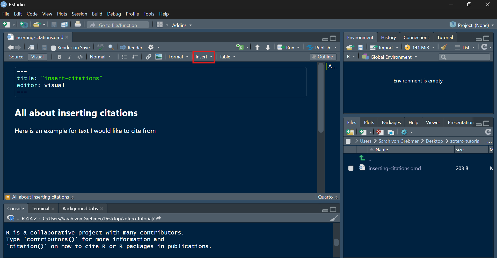
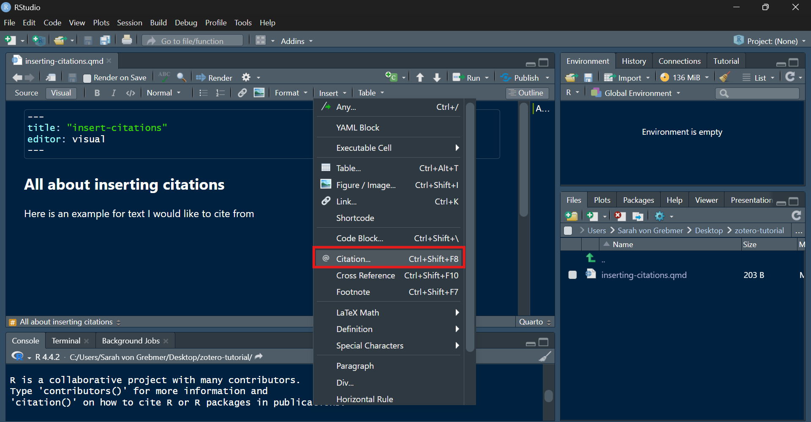
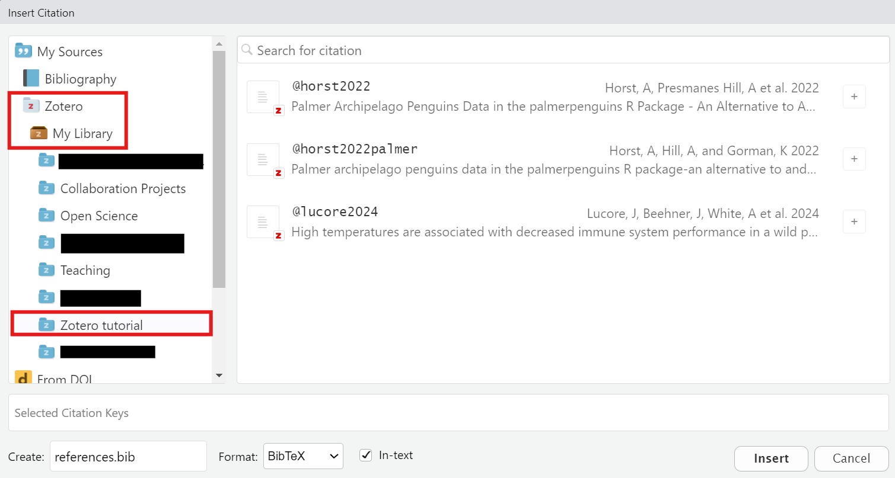
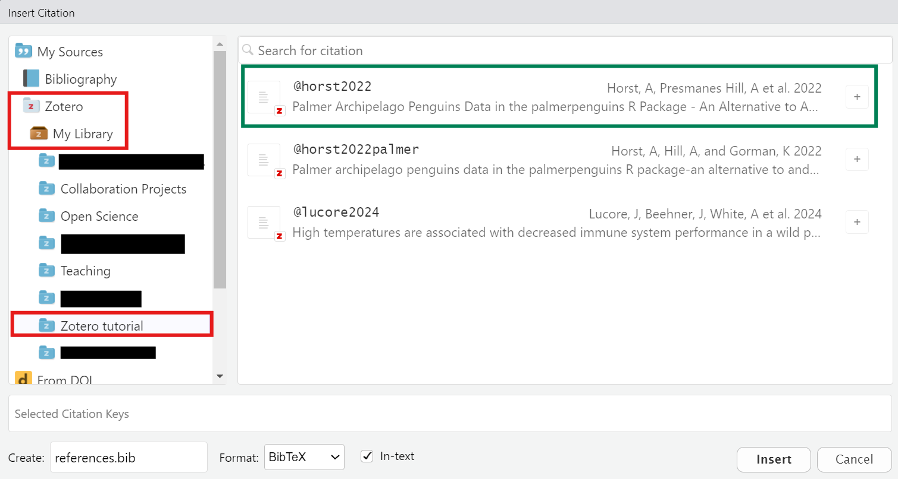
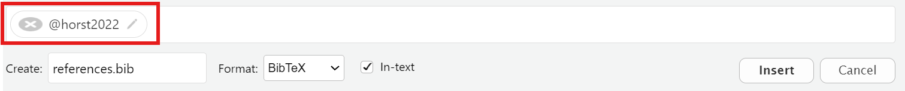
Note that citation key edits must be done the first time you include a new citation and you cannot have spaces in the name. Press Insert when done.
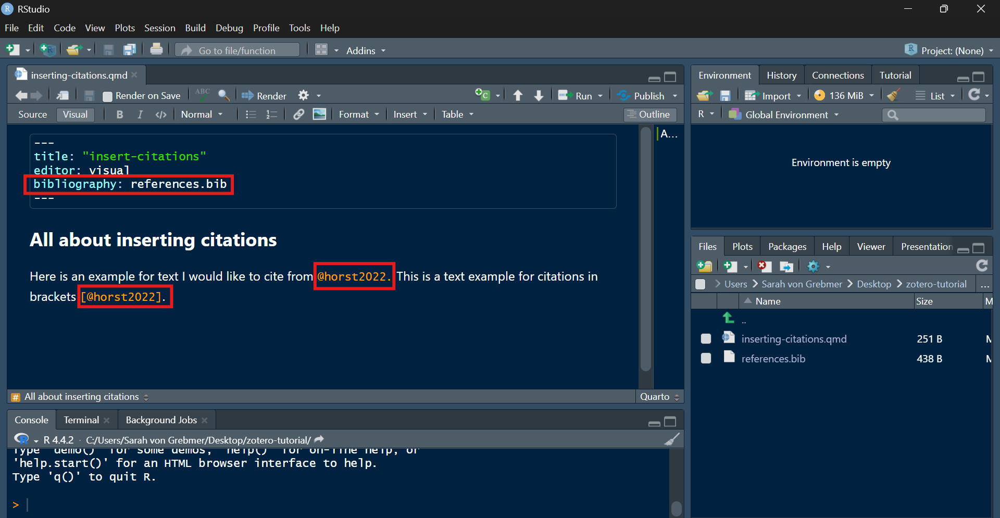
bibliography: references.bib text to the yaml header. RStudio will either create or update the references.bib file for you.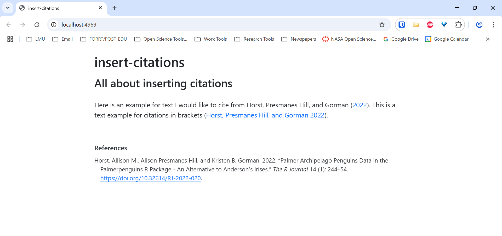
Automatic Generation of Bibliography File
If you did not export a references.bib file from Zotero, you can automatically generate a bibliography file within RStudio when you insert a citation. This bibliography file created by RStudio will be automatically updated to include any new citations you add. You still must define the name of the bibliography file RStudio should create for your citations using the bibliography: <your-references-file.bib> line in the YAML header like below.
---
title: "My Document"
bibliography: my-references.bib
---Here, RStudio generates a citation key for each new item you include in a document. They typically follow the format @authorYear or @authorYearLetter when there are multiple references matching the format. 1 These keys can be customized to your liking, but this should be done only prior to using them the first time.2 Also note that the citation keys do not necessarily match the citation keys within your Zotero application.
Inserting citations without a pre-exported references.bib file works as follows:
- In the “Visual” editor, type the
@symbol - From the drop-down menu select the reference you want to cite or use the DOI
- When prompted, change the Citation ID (if really necessary) and click
Ok - Check the automatically created
my-references.bibfile
A Note on Updating Citations within Zotero
A current shortcoming with the default method of inserting citations by exporting the references.bib file from Zotero and saving it in your working directory or getting RStudio to generate the bibliography file for you is that the bibliography file does not automatically update when you update the references in Zotero. If you make changes to the citations within Zotero, you may need to delete the references.bib file and re-export it or reinsert the citations to force updating of the bibliography in your project. This sounds a bit complicated, but simply deleting the references.bib file and reinserting a single citation will prompt RStudio to regenerate a new references.bib file with the updated references. However, a much more practical and less time-consuming way is to export a references.bib file directly from Zotero that is automatically updated when changes to the Zotero entires occur, see the next section.
Automatically Updating the Bibliography File via Zotero
In order to create a bibliography file that is autmatically updated when changes occur (see the discussion on the Zotero forum here), you need to first install the Better BibTeX plugin. Next, follow these steps:
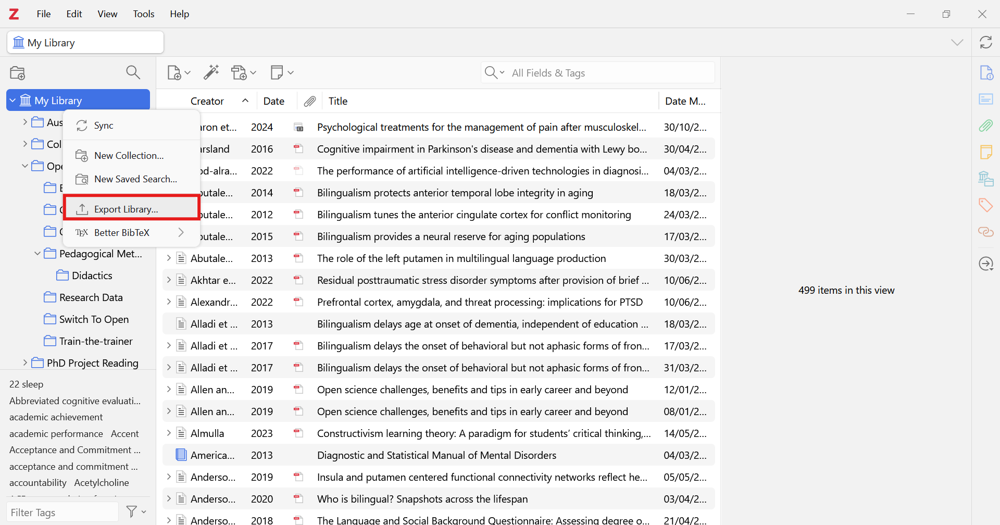
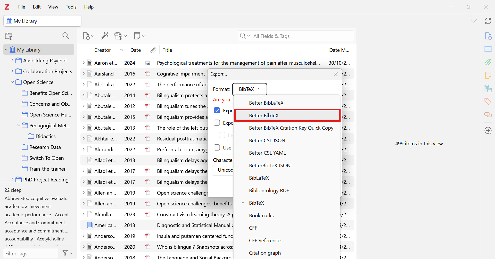
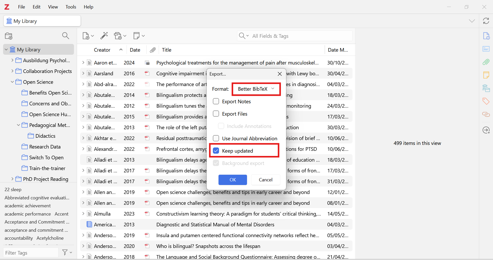
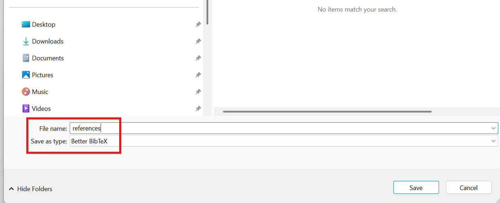
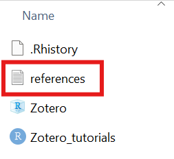
To test the automatic updateing of your bibliography, you can add a new source to your Zotero library and then insert the source as a citation in your Quarto document. Note that you can manage different important settings for Better BibTex directly in the Zotero settings, for example for citation key formatting or, importantly, for automatic export:
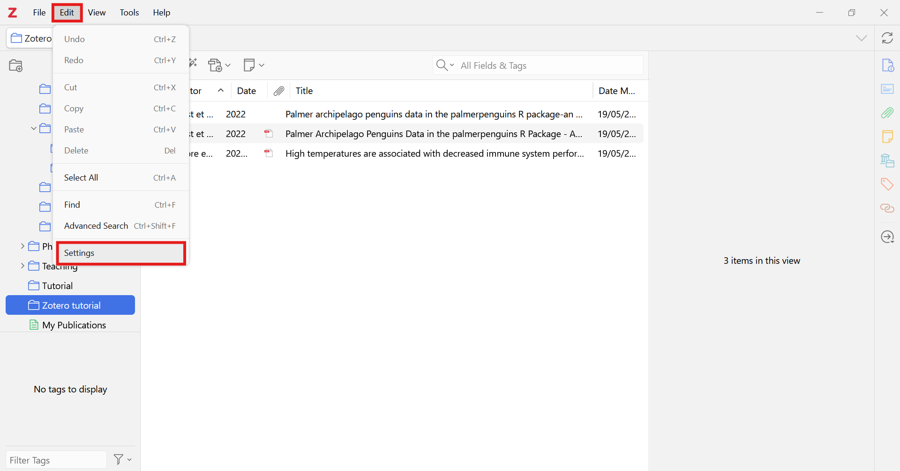
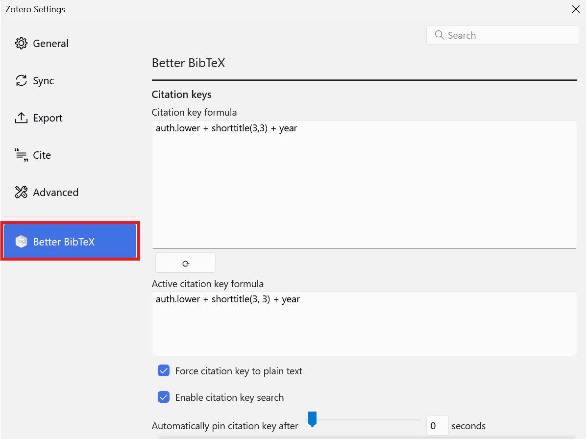
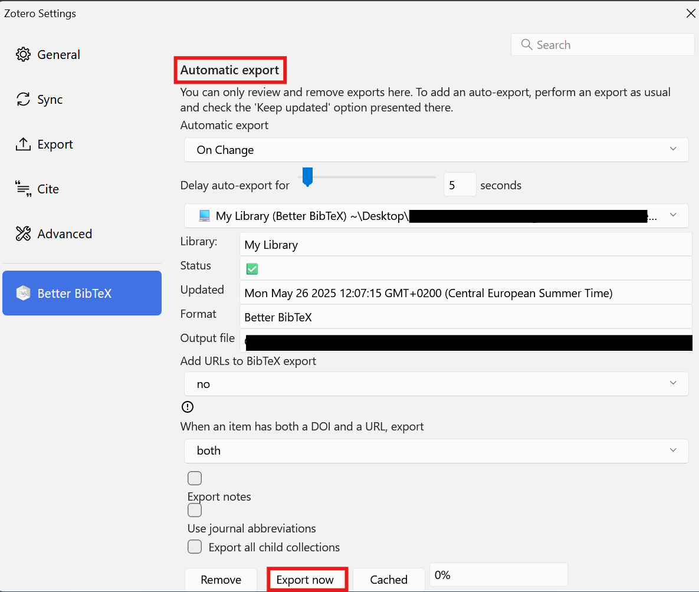
To avoid the shortcoming of manual updating of bibliography files or manual deletion of the reference.bib file, we strongly recommend using the Better BibTex plugin.
Adding References at the End of the Document
After inserting your citations, you will presumably want a well-formatted bibliography or references section available at the end of your document. “By default, Pandoc will automatically generate a list of works cited and place it in the document if the style calls for it. It will be placed in a div with the id refs if one exists. (Quarto 2026):”
### References
::: {#refs}
:::This will generate a “References” section at the end of your document with the bibliography formatted according to the citation style you have specified in the YAML header. An example of this can be found at the bottom of this page!
Changing Citation Style
The Citation Style Language page talked in depth about the different citation styles available to you. You can change the citation style of your document by adding the csl: <your-csl-file.csl> line to the YAML header like below:
---
title: "My Document"
bibliography: references.bib
csl: your-csl-file.csl
---This will change the citation style of your document to the style specified in the CSL file you provide. You can find CSL files for different citation styles on the Citation Styles Library website.
Note that the csl: field can also be a link directly to a CSL file online. For example, the following YAML header will use the Nature citation style:
---
title: "My Document"
bibliography: references.bib
csl: https://www.zotero.org/styles/nature
---References
Footnotes
The citation keys used in RStudio use Pandoc citation syntax. You can find more information on Pandoc citation syntax in the Pandoc documentation on citations and citation syntax.↩︎
If needed, you can edit the citation keys in the
references.bibfile directly. However, you must ensure that the citation key is unique and does not contain any spaces or special characters.↩︎